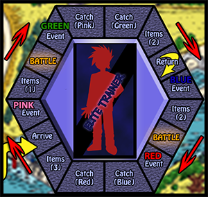
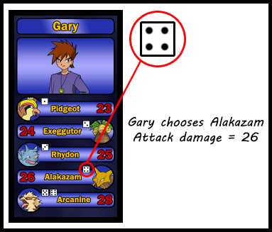

As was explained earlier, you need to make your way to Cinnabar Island. When you get there and you have at least 20 power points, you can take the ferry to Indigo Plateau (on your next turn).
Once you have made it there, you will continuously circle around (clockwise) the plateau until you manage to battle and defeat an elite trainer. The spaces on Indigo Plateau look different than the spaces on the rest of the board, but their functionality is the same. Sometimes you get items, sometimes you get events, sometimes you catch Pokémon and sometimes you battle. When you land on a catch space, you can pick any Pokémon for the color you land on. It doesn't matter if it is face up or face down. The catching process is the same as it always is. Events usually don't have a color, so this is not shown on the board. However, for the Team Rocket event, a color must be specified. This color is in the same order as the rarity of Pokémon. The first Event space you encounter will be pink, the last one red. But don't worry, the game will tell you what your options are. Your goal, of course, is to land on a "BATTLE" space. This allows you to battle against an elite trainer and perhaps win the game. If you happen to land on the "Return" space, you MUST return to Cinnabar Island. In case you have lost some Power Points during your stay, you might not be able to return again immediately.
At the start of a battle with an elite trainer, you must select your Pokémon to fight with before your opponent is revealed. In the second step, you can use up to 2 attack bonus cards (this is 1 more than in a regular battle). The elite trainer won't use attack bonus cards, but his Pokémon have a much higher than usual base damage. As a final step, the dice are rolled. For the elite trainer, the die roll functions as the selection of his Pokémon. The total damage is calculated and the Pokémon with the highest amount wins the battle. If there is a tie, the dice are rolled again. The calculation for the challenger is as usual: Base damage + die roll + attack bonuses (+ evolution bonus). The calculation for the elite trainer is simply the base damage of the chosen Pokémon (a different Pokémon may be chosen after a tie). If you win the battle, the game ends and you are a Pokémon Master! If you lose, your Pokémon is knocked out and you are sent back to Cinnabar Island. Just like when landing on the "Return" space, you will have to walk away and come back to Cinnabar Island later before you can go to Indigo Plateau again.
